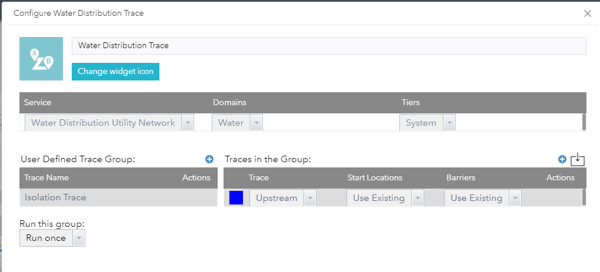
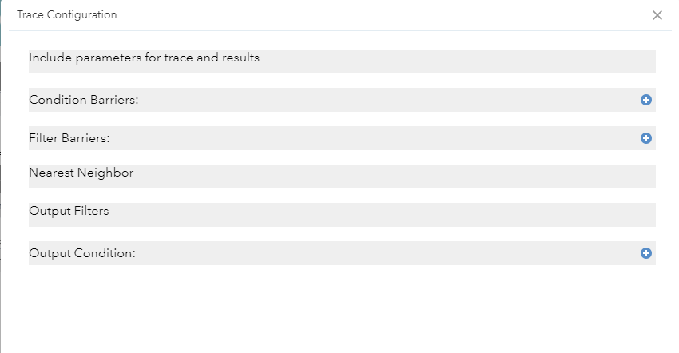
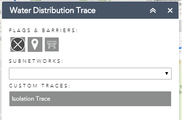

Configuring the ArcGIS Utility Network Management Extension Web AppBuilder widget to perform a trace.
This article assumes you have a published an utility network in your ArcGIS Enterprise and are familiar with Tracing.
This article assumes you have an understanding of setting up ArcGIS Web AppBuilder.
Getting the widget and map ready
In your ArcGIS Enterprise, create a webscene and add the service that represents your utility network data. If you are using the utility network configurations provided on solutions.arcgis.com, you would use the Simple Network map service. Download ArcGIS Web AppBuilder Developer Edition and add a custom widget or use the ArcGIS Enterprise version of ArcGIS Web AppBuilder if you are familiar with how to deploy a custom widget.
Launch Web AppBuilder and create a new 3D application. The widget has been developed using the 4.x api which is only available in the 3D applications in Web AppBuilder
Once the settings page has loaded, open the scene tab. Choose the webscene that you authored in your portal.
Go to the Widget tab and click the arrow next to the Header Controller to get to the widget slots. Click the empty slot and add the UNTrace widget.
Configuring the UNTrace widget
Hover over the widget icon and click on the pencil in the lower right corner of the icon.
A configuration dialogue is displayed. Select the Service, Domain, and Tier you want to create. If your utility network service is not visible, ensure it is registered as an item in your content.
Click the blue plus circle next to
User Defined Trace Group. A prompt will display asking you to
give this next trace grouping a name. A trace group allows you to
preform multiple trace operations with a single click.
After you
give the group a name, you should see a new row in the table
underneath User Defined Trace Group. A default Connected trace is
added to the configuration panel for new groups. You can configure
this trace or delete it. There is an optional “Run this group”
parameter on the bottom left side of the configuration panel that
allows you to run one trace a number of times or until a certain
condition is reached.

The trace configuration panel allows you to control the inputs, the output colors and the trace parameters. Currently the widget support four trace types, connected, upstream, downstream, and subnetwork. For the Start Locations(flags) and Barriers you can select to use the values defined by the user(Use Existing) or load them from a previous trace(Replace All With, Add/Remove from Existing) in the same group. You can define the trace parameters manually by opening the trace parameter button using the pencil icon in the actions or click the import button in the top right to load a python snippet.
For the remainder of the overview, an isolation trace for a water network will be used to review the steps required to set up the widget.
Set the type of trace to an Upstream and leave the defaults of Use Existing for both Start Locations and Barriers.
Hover over the Actions column and click on the pencil icon. This will launch the trace configuration dialog. You do not need to configure any of these settings to make a trace run, these setting further refine the traversability or output of the trace.

Include parameters define whether you want your result set to include containers, content, barriers and validate the consistency of the network. Check all the checkboxes except Validate Consistency.

Condition Barriers filters the traversability and stops a trace once the conditions are met. For this example, add two clauses. For the clauses, fill them out accordingly.
Name: Pipe Device
Status
Operator: Is equal to
Type: Specific
value
Value: Closed
Combine Using: Or
Name: Lifecyle
Status
Operator: Does not include any
Type:
Specific value
Value: In Service and To Be Retired
Combine
Using: And
Once completed, this section should look like the following.

Filter Barriers specifies when the trace should stop based on the valid paths found using the condition barriers. For this example, we want to stop at devices categorizes as isolating. Define a filter barrier and fill it out accordingly.
Name: Category
Operator:
is equal to
Type: Specific value
Value:
Isolating
Combine Using: Or
Once completed, Filter Barriers
section should look like below.
Nearest Neighbor returns a number of features of a certain type within a given distance by using the k-nearest neighbors algorithm. In this example, do not define anything for this section.
Output Filters and Output Condition filter the data included in the results. Output Filters allow you to define by Asset Group or Asset Type where Output Condition allow you to filter the results by a category or network attribute. For this example, you will not define any Output Filters, and define one Output Condition
Name: Category
Operator:
is equal to
Type: Specific value
Value:
Isolating
Combine Using: And
Output condition should look like
the following once completed.
Once all these parameters are set, press OK in the dialog to close save and close the dialog.
The first trace has been configured and is ready to run. This will trace the network and return to you all valve upstream from a leak location. To get a list of affected customers, walk through the next section to add a second trace to the group.
Instead of stepping through the configuration for this trace, you the import feature of this widget we be highlighted. The import feature can take a python trace result in your ArcGIS Pro geoprocessing history and fill out all the parameters automatically for you.
To get to the python result in
ArcGIS Pro, open the Trace Geoprocessing tools, fill out the
parameters and run a trace. After it has completed, click on the
Analysis tab on the top ribbon. Click on History.
You will be presented with a list of all your geoprocessing tools that have been ran. Right click a trace and select Copy Python Command. This will copy the python signature into your clipboard. For purposes of this example, the python code is provided below.
Go back to ArcGIS Web AppBuilder and
your widget configuration. On the right side of the Traces in the
Group section, click on the square with down arrow. This
will open up the import dialog. Paste the python code into the
dialog.
arcpy.un.Trace("L950Water_Utility_Network Utility
Network", "CONNECTED", r"UN_Temp_Starting_Points",
r" UN_Temp_Barriers", "Water", "System",
None, None, None, "INCLUDE_CONTAINERS", "INCLUDE_CONTENT",
"INCLUDE_STRUCTURES", "INCLUDE_BARRIERS",
"DO_NOT_VALIDATE_CONSISTENCY", "'Pipe Device Status'
IS_EQUAL_TO SPECIFIC_VALUE 0 OR;'Lifecycle Status'
DOES_NOT_INCLUDE_ANY SPECIFIC_VALUE 24 #", None,
"BOTH_JUNCTIONS_AND_EDGES", None, None,
"BOTH_JUNCTIONS_AND_EDGES", None, "DO_NOT_FILTER",
None, None, None, None, None, None, "'Water Device/Service
Connection/Commercial';'Water Device/Service Connection/Fire';'Water
Device/Service Connection/Fire';'Water Device/Service
Connection/Industrial';'Water Device/Service
Connection/Irrigation';'Water Device/Service
Connection/Residential'", None)
Press Ok. If the python code is not valid you will get an import warning. If it Imports successfully, the dialog will close and you will see 2 traces in the group now.
Change the color for the
result of each of the traces. Your configuration should look like
below.
One last step is to tie the 2 traces together. The result of the Upstream trace will need to be Barriers for the Connected trace to confine the trace area to determine which service connections will be impacted.
On the Connected trace row, in the Barriers column, select Replace all with. You will see a new section appear to show you with asset types to replace the existing barriers. If it is not visible, ensure the row is selected. Add the controllable valves as shown in the image.. The final configuration of the widget should look like below.

Press OK to save the configuration of the widget.
Run the Widget and Execute the Trace.
Launch Web AppBuilder. Once the
application loads, click on the Trace Widget icon on the top right
side of the application. The widget will load.

Click on the starting location icon (pin) and click on any asset on the map. This is represent a leak or broken device. Click on the Isolation button on the widget. This will execute the trace and show the controllerable system valves in orange and the impacted service connections in red. Your trace result will look like the image below.
This article showed you how to setup your ArcGIS Web AppBuilder environment to use a custom widget to perform a trace against the ArcGIS Server Utility Network Management Extension.